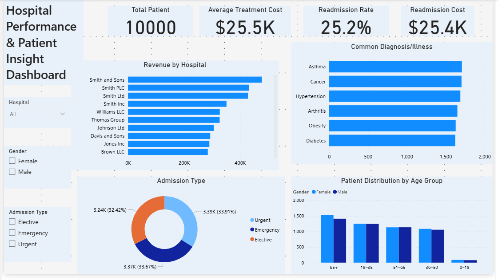

Hospital Performance & Patient Insights
View Detailed Report
Back To Portfolio
Project Overview
This project focuses on analyzing hospital operations and patient records to understand how healthcare performance affects patient experience,
operational efficiency, and revenue generation.
Using SQL for analysis and Power BI for visualization, I explored patient admissions, waiting times, treatment outcomes, hospital revenue, and
operational performance to uncover opportunities for improving healthcare delivery.
Goal
To identify operational inefficiencies, understand patient trends, and uncover opportunities to improve healthcare performance, patient satisfaction, and hospital revenue.
Process
- I cleaned and prepared hospital and patient records for analysis.
- I used SQL to answer business questions related to patient admissions, treatment outcomes, revenue performance, and operational efficiency.
- I analyzed patient flow and waiting time patterns.
- I identified factors affecting hospital performance and patient experience.
- I built an interactive Power BI dashboard to monitor healthcare KPIs and operational trends.
Key Insights
- I identified departments with higher patient volumes and longer waiting times.
- I discovered patterns affecting patient satisfaction and treatment efficiency.
- I found that certain operational bottlenecks contributed to delays in patient care.
- I highlighted opportunities to improve resource allocation across departments.
- I uncovered trends that could help hospital management improve both patient outcomes and revenue performance.
Dashboard Preview
